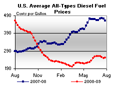

Released on July 29, 2009
(Next Release on August 5, 2009)
How Long Will the Seas Remain Quiet?
As we approach the end of July, the seas bordering the southern U.S. have remained relatively calm. There was one minor tropical depression that passed near the Carolinas in late May, but the Gulf of Mexico has been spared so far this year. However, it is still early in the hurricane season. At this time last year, the Gulf of Mexico was recovering from its first hit of the season, by Hurricane Dolly, which struck only a glancing blow. Then, late August and early September brought Hurricanes Gustav and Ike, which each shut in all oil production in the Gulf of Mexico for a few days and had impacts that lingered for months, particularly in the Lafayette and Houma producing regions that suffered more damage and were slower to recover than other areas (see Figure 1). By the end of 2008 about 150,000 barrels per day (bpd) of production capacity remained shut-in, with a cumulative reduction in crude oil production over the second half of 2008 due to hurricane damage of about 60 million barrels.
Hurricane prediction is uncertain, and even when a severe storm threatens the Gulf of Mexico region, it is difficult to predict the effects on oil production. Shut-in production in any particular year varies depending on the overall level of severe weather and the specific track of each storm (see Figure 2). The series of category five hurricanes affecting the Gulf of Mexico in 2004-2005 (Ivan, Katrina, and Rita) spurred the industry to strengthen its offshore production infrastructure. As a result, producers were better able to manage the impacts when Hurricane Dean threatened the area in 2007. Yet, Hurricanes Gustav and Ike demonstrated that direct strikes by powerful storms can still significantly disrupt supply despite better preparations.
The historical record shows that the impact of hurricanes on production varies widely from year to year. A simple estimate of the potential reduction in crude oil production can be derived from historical hurricane activity and production outages, but a more appropriate approach relies on a method that also reflects the estimate’s inherent uncertainty. A recent supplement to EIA’s Short-Term Energy Outlook (STEO) models the uncertainty surrounding shut-in production using a Monte Carlo simulation (The 2009 Outlook for Hurricane Production Outages in the Gulf of Mexico). The simulation combines information from the National Oceanic and Atmospheric Administration (NOAA) hurricane projections with the shut-in production from past storms and randomly simulates the number of tropical storms and hurricanes passing through the Gulf along with the outage caused by each event. This simulation creates a probability distribution illustrating the likelihood of various levels of production impacts.
On May 21, NOAA predicted a 70-percent probability that 9 to 14 named storms will form within the Atlantic Basin during the current hurricane season, including 4 to 7 total hurricanes of which 1 to 3 will be intense. These ranges are slightly above the seasonal average. Using these storm projections, the STEO analysis estimates the uncertainty surrounding seasonal shut-in projections. The median of the probability distribution represents an outage of 4.5 million barrels for the entire season, which is the assumption that the STEO uses for its forecasts for crude oil production.
U.S. Average Gasoline and Diesel Prices Moving Up
For the first time in five weeks, the U.S. average price for regular gasoline increased, climbing four cents to $2.50 per gallon. The price is $1.45 below the year-ago price. Prices rose in most areas of the country, slipped slightly in the Rocky Mountains, and were unchanged on the West Coast. On the East Coast, the average price inched up a penny to $2.48 per gallon. The largest increase occurred in the Midwest, where the price shot up 10 cents to $2.46 per gallon. Despite an increase of five cents to $2.37 per gallon, the Gulf Coast continued to have the lowest price of any region, and was the only region where the price was less than $2.40 per gallon. The only region to experience a drop in price was the Rocky Mountains, where the average dipped two cents to $2.50 per gallon. Prices in both the West Coast and California were unchanged at $2.77 and $2.83 per gallon, respectively.
Although the national average price for diesel rose for the first time in five weeks, increasing three cents to $2.53 per gallon, it remained $2.08 below the price a year ago and $2.24 less than the all-time high price set on July 14, 2008. With the exception of the Rocky Mountains, prices rose throughout the Nation. On the East Coast, the average rose about four cents to $2.55 per gallon. Adding three cents to the average price in the Midwest brought it to $2.50 per gallon. The price on the Gulf Coast gained a nickel, but at $2.49 per gallon, remained the lowest of any region. Dipping two cents to $2.54 per gallon, the average in the Rocky Mountains was the only regional price that did not increase. On the West Coast and in California, the average price increased two cents to $2.62 and $2.72 per gallon, respectively.
Propane Stocks Continue Ascent
Inventories of propane continued to climb at a robust pace last week, up by over 1.9 million barrels to finish the week of July 24, 2009 at an estimated 68.4 million barrels. The East Coast showed a rise of 1.2 million barrels, due to a large increase in imports. Inventories in the Midwest region grew by 0.4 million barrels and the Gulf Coast experienced a modest build of 0.3 million barrels. Inventories in the combined Rocky Mountain/West Coast regions were relatively unchanged. Propylene non-fuel use inventories rose last week as its share to total propane/propylene inventories increased to 3.3 percent, compared with the prior week’s 3.1 percent share.
Text from the previous editions of This Week In Petroleum is now accessible through a link at the top right-hand corner of this page.
| Retail Prices (Cents Per Gallon) | |||||||
|  | |||||||
| Retail Data | Changes From | Retail Data | Changes From | ||||
| 07/27/09 | Week | Year | 07/27/09 | Week | Year | ||
| Gasoline | 250.3 | Diesel Fuel | 252.8 | ||||
| Spot Prices (Cents Per Gallon*) | |||||||||||||||||||||||||||||||||||
 |
|||||||||||||||||||||||||||||||||||
|
|||||||||||||||||||||||||||||||||||
| *Note: Crude Oil WTI Price in Dollars per Barrel. | |||||||||||||||||||||||||||||||||||
| Stocks (Million Barrels) | |||||||
| Stocks Data | Changes From | Stocks Data | Changes From | ||||
| 07/24/09 | Week | Year | 07/24/09 | Week | Year | ||
| Crude Oil | 347.8 | Distillate | 162.6 | ||||
| Gasoline | 213.1 | Propane | 68.368 | ||||